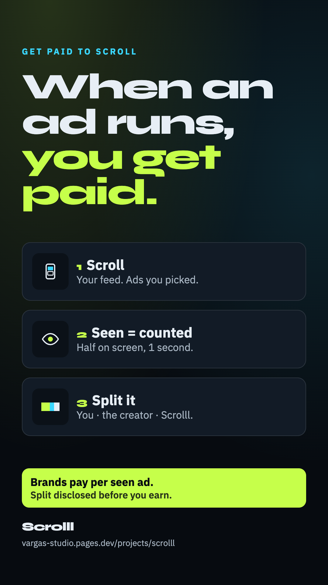
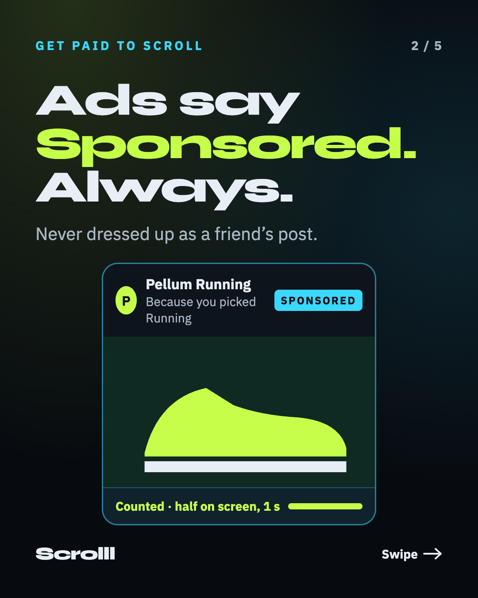
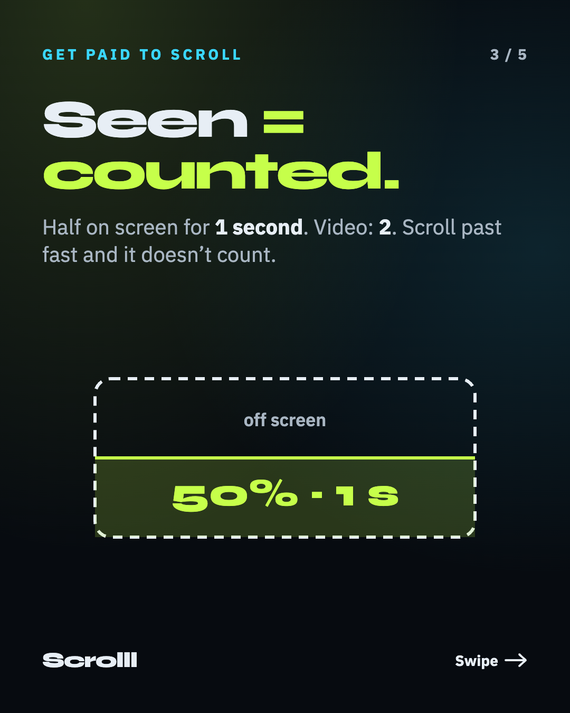
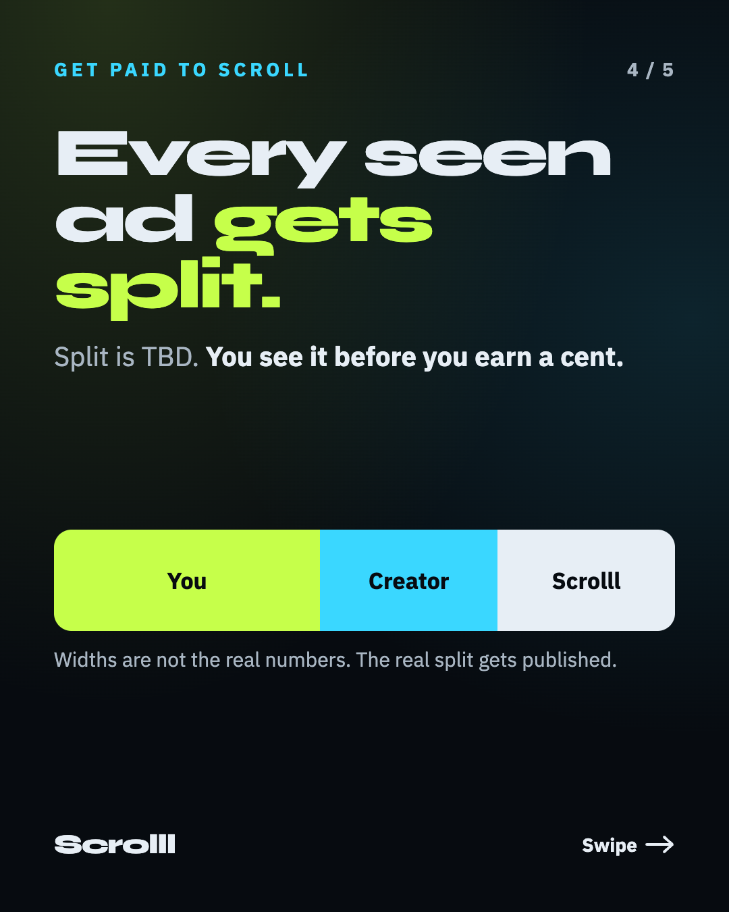
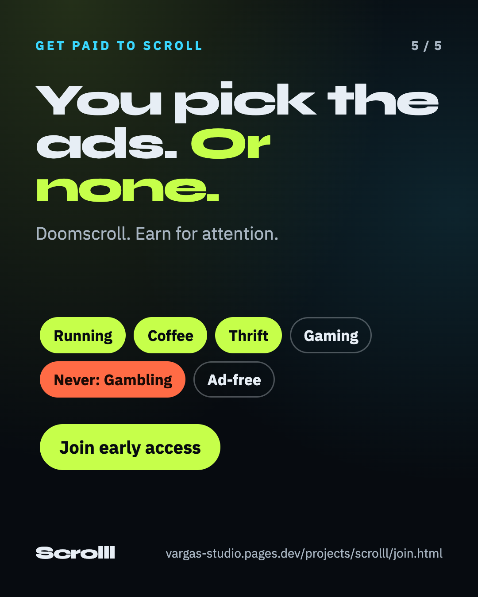

Organic social kit
How Scrolll pays, in one picture.
An explainer in three sizes and a five-slide carousel. No made-up numbers: the split stays TBD, disclosed before you earn.
Explainer
Scroll → seen = counted → split. Five-second read.




Carousel · 5 slides
4:5 (1080×1350). Hook → labeled ads → what counts → the split → you choose.









Caption to post with it
Your feed already sells your attention. Scrolll splits each seen ad with you. Split disclosed before you earn. Early access: link in bio.
Your feed already sells your attention. Scrolll splits each seen ad with you. Split disclosed before you earn. Early access: link in bio.
Sources: explainer.html (?size=square|wide|story) and carousel.html (?slide=1–5).